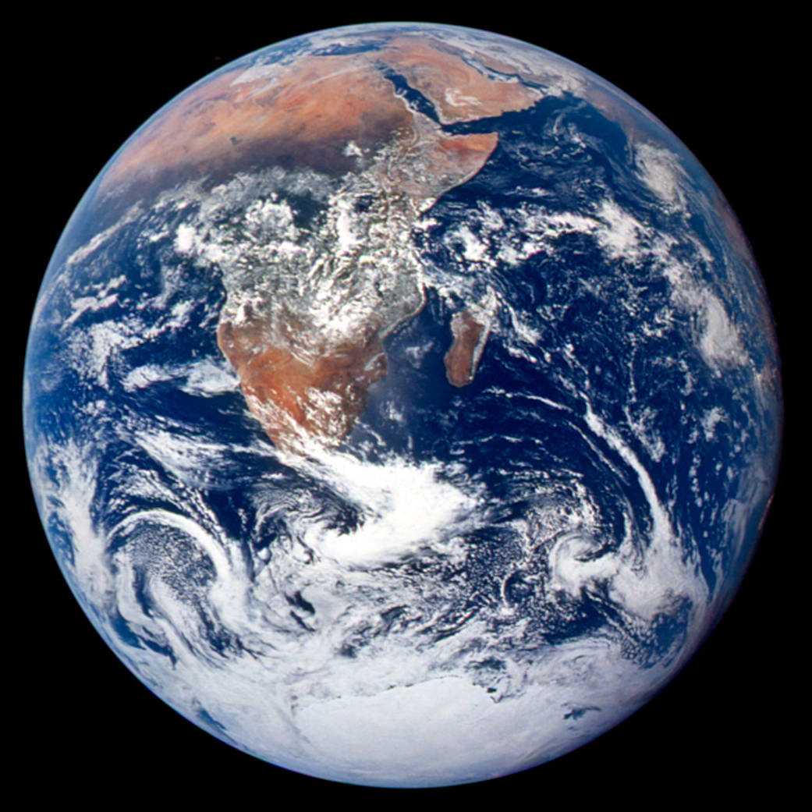
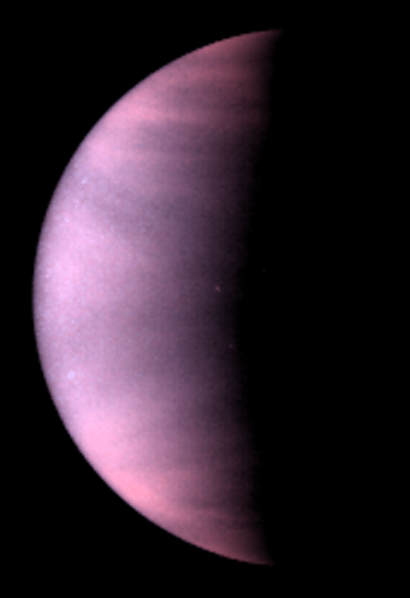

Reading Anchor
OpenStax Astronomy 2e, Chapter 7.1-7.4 on solar-system overview and formation, plus Chapters 9-10 for terrestrial worlds. The local textbook reference is stored at references/openstax-astronomy-2e.pdf. These notes use the textbook for scope and terminology while presenting original explanations and examples.
Lecture Arc
The inner planets share a formation environment but have dramatically different surfaces, atmospheres, and geological histories.
The lecture should begin by asking students what can be observed directly. Only after that should the explanatory model be introduced. This helps students distinguish evidence from interpretation, a distinction that becomes essential when the course moves from the night sky to stars, galaxies, and cosmology.
Terms Developed in Context
These terms form a connected reasoning system for the lecture. Each entry extends the concise slide panel by showing how the term is used, what it is linked to observationally or mathematically, and where its interpretation can fail.
- protoplanetary disk
A rotating disk of gas and dust surrounding a young star from which planets and smaller bodies can form. Its flattened structure explains the broadly coplanar, same-direction architecture of many planetary systems. Temperature gradients across the disk influence condensation, the ice line, and the materials available for accretion.
In context: Angular-momentum conservation helps a collapsing cloud flatten into a disk. Observed disks around young stars show rings and gaps, but those structures do not always prove a planet is present. Boundary: Disk evolution is dynamic and diverse; the solar nebula is reconstructed from incomplete evidence rather than observed directly.
- accretion
Growth by gravitationally or collisionally gathering smaller particles and bodies. It links microscopic dust grains to planetesimals, embryos, planets, and continuing impact histories. Collision speed, sticking efficiency, gravity, and gas drag determine whether encounters build or erode bodies.
In context: Once bodies become massive enough, gravitational focusing increases their collision cross section. The transition from dust to kilometre-scale planetesimals remains an active modeling challenge. Boundary: Accretion is not automatically smooth; fragmentation, migration, and giant impacts can interrupt or reverse growth.
- differentiation
Separation of a planetary body into layers of different composition or density, commonly during heating and melting. It explains cores, mantles, crusts, magnetic-field potential, and volcanic chemistry. Dense materials sink while buoyant materials rise when the interior can flow; heat comes from accretion, radioactivity, and impacts.
In context: Differentiation is inferred from density, moment of inertia, seismic data, magnetic fields, and meteorite chemistry. Layering records thermal history as well as composition. Boundary: Small or cold bodies may remain only partly differentiated, and later mixing can obscure the original layering.
- cratering
The excavation and deformation of a surface by high-speed impacts. Crater abundance and preservation provide a relative record of surface age and resurfacing. Impact rate, projectile properties, gravity, atmosphere, erosion, and volcanism all shape the observed crater population.
In context: Large craters are rarer than small ones, and overlapping or eroded craters complicate counting. Absolute ages rely on samples or dynamical models, not image counts alone. Boundary: Crater counts require calibration and assumptions; a crater-poor surface may be young or actively resurfaced.
- volcanism
Transport of molten or volatile-rich material from a body's interior to its surface. It reshapes terrain, releases atmospheric gases, and reveals internal heat. Volcanism competes with cratering and erosion in setting surface age; tidal heating can sustain it on some moons.
In context: Earth, Venus, Mars, the Moon, and Io show different volcanic styles because composition, gravity, atmosphere, and heat supply differ. Detecting present activity requires temporal or thermal evidence. Boundary: Volcanic-looking landforms require geological context because impacts or tectonics can make similar shapes.
- greenhouse effect
Surface warming produced when an atmosphere absorbs and re-emits outgoing infrared radiation while remaining comparatively transparent to incoming stellar energy. It is central to explaining the divergent climates of Venus, Earth, and Mars. Atmospheric composition, pressure, clouds, albedo, and energy balance determine its magnitude.
In context: A planet's equilibrium temperature omits atmospheric back-radiation. Positive feedbacks can amplify warming, but clouds and circulation make full climate response more complex than a one-layer model. Boundary: It is not caused by a glass-like lid or by ozone, and the existence of a natural greenhouse effect does not specify its strength.
- comparative planetology
The study of planets and moons by comparing their properties, histories, and physical processes. Controlled comparisons reveal why similar starting conditions can lead to different outcomes. It integrates accretion, differentiation, cratering, volcanism, atmospheres, and orbital environment.
In context: Earth and Venus isolate some contrasts in atmosphere and climate while sharing approximate size. Mars and the Moon help test how size and internal heat affect geological longevity. Boundary: Planets are not controlled laboratory duplicates; many variables change together, so causal claims require care.
Evidence Table
| # | Evidence or observation | How students should interrogate it |
|---|---|---|
| 1 | Planet orbits mostly lie in the same plane and direction. | What measurement, image, spectrum, or sky observation would support this? |
| 2 | Rocky planets are denser and closer to the Sun than giant planets. | What measurement, image, spectrum, or sky observation would support this? |
| 3 | Crater counts, volcanic features, and atmospheres preserve different histories. | What measurement, image, spectrum, or sky observation would support this? |
Model Development
The model for this lecture has three linked parts:
- The nebular model explains broad architecture through a rotating disk.
- Temperature gradients affected which materials condensed at different distances.
- Planetary evolution depends on mass, internal heat, atmosphere, impacts, and solar distance.
The instructor should emphasize where the model is a simplification. Introductory astronomy often works by adopting a useful first model, identifying its assumptions, and then refining it when new evidence demands more detail.
Quantitative Reasoning
This equation or proportionality is not just a formula to memorize. It is a compact statement of a physical or geometric relationship. A strong student solution defines each symbol, states the unit system, identifies the assumptions, and interprets the result in words.
Worked Example
- If two planets have similar radius but different mass, their mean densities reveal composition differences.
- A high density supports a rock/metal-rich body; a low density may indicate ice or gas contribution.
- Density is an average and does not uniquely determine internal layering.
After completing the calculation, students should ask whether the result is plausible. A numerical answer without a reasonableness check is not yet a scientific conclusion.
Visual Interpretation


Earth and Venus are similar in size, but their visible atmospheres already show divergent climate histories. Credits: NASA/Apollo 17 crew/JSC; L. Esposito, University of Colorado Boulder, and NASA/ESA.
Misconception and Boundary Condition
The correction should not be presented as a slogan. It should be tied to the evidence and model from this lecture. Students should practice saying what would be different if the misconception were true.
Active Learning Plan
Students compare Mercury, Venus, Earth, and Mars using radius, atmosphere, surface age, and evidence for geological activity.
A suggested timing is 2 minutes individual prediction, 3 minutes peer comparison, and 3 minutes whole-class synthesis. The point is to make students commit to a model before seeing the instructor's full explanation.
Lab or Observing Connection
The planetary image lab uses surface evidence to infer relative ages and processes.
Students should see the lab as a continuation of lecture reasoning. The lab does not merely demonstrate a concept; it asks students to collect, interpret, or critique evidence with uncertainty.
Synthesis and Study Questions
Comparative planetology turns differences among worlds into experiments on formation and evolution.
- What was the central observation or evidence pattern?
- What model explains it, and what assumptions does the model make?
- Where did quantitative reasoning constrain the claim?
- What uncertainty, limitation, or misconception remains important?
References
- OpenStax, Astronomy 2e: OpenStax Astronomy 2e, Chapter 7.1-7.4 on solar-system overview and formation, plus Chapters 9-10 for terrestrial worlds.
- Course reference log:
../reference-log.md.